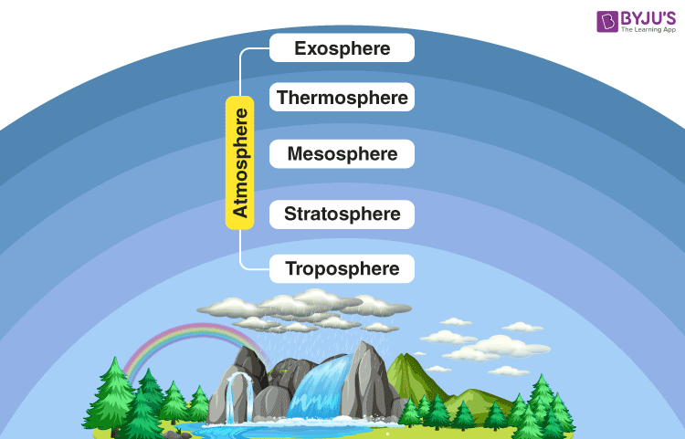
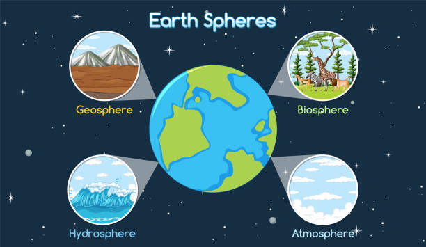
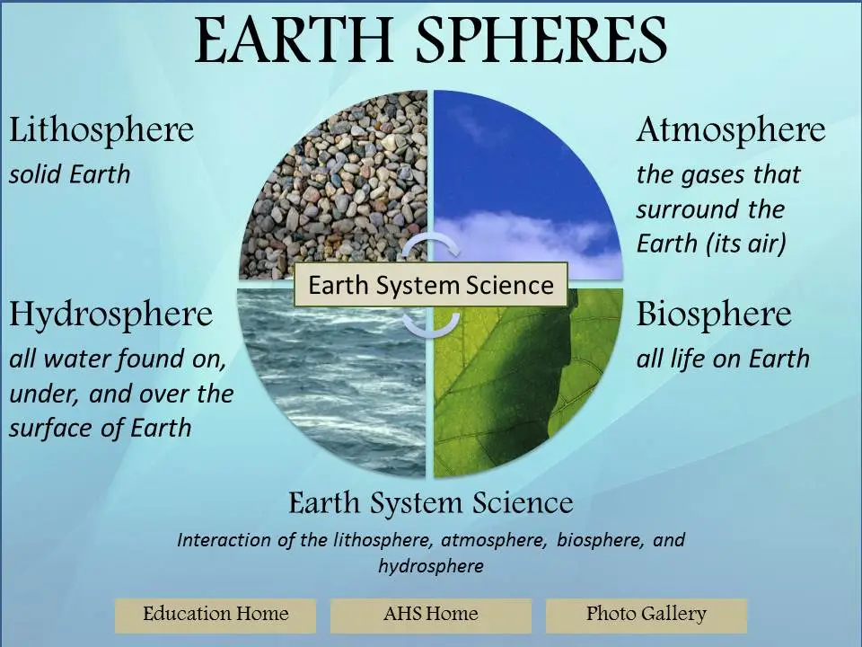

Earth has four main spheres: Hydrosphere, Lithosphere, Biosphere, and the Atmosphere; these four spheres keep exchanging energy and matter between them.
Hydrosphere is the sphere that has all the liquid, solid and gasses of water on Earth, and the thickness of the Hydrosphere is on average 10 to 20 kilometers. The Hydrosphere sphere goes down to the Lithosphere sphere and it goes up to 12 kilometers to the Atmosphere. Hydrosphere is mostly salt water but there is a small amount of fresh water. This water goes to the Atmosphere that goes down to Earth's surface like rivers, oceans and as groundwater underneath earth. Most of Earth’s fresh water is frozen like Antarctica, and 97% of the water is salted and is located in the oceans.
Lithosphere is the Spheres that owns the cold,and hard solids land in the earth’s crust, underneath the surface, and the liquid land that is in the center of Earth. The lithosphere surface is really uneven compared to the other Spheres, this is because there are mountains, big planes, and the really deep valleys under the ocean. The lithosphere has lots of physical and chemical differences in its layers.
Biosphere is the Spheres that owns all the living things, for example, plants, animals, and microbes on earth. Desserts, grass planives, and rainforests are some of the biomes on Earth.
The Atmosphere is the Spheres that have all of Earth’s air, that starts in less than 1 kilometers from the surface to over 10,000 kilometers high. The upper part of the Atmosphere protects the organisms of the Biosphere from the sun's ultraviolet radiation, and the Atmosphere also absorbs and emits heat to Earth. When the bottom part of this Spheres changes temperature creates weather like rian.
Heat transfer between the spheres contribute to tornadoes by the heat being instance and rapidly transferred between layers in the spheres, and it transfers heat when the tornado touches down because of the friction and the kinetic energy. The tornado will keep spinning until the warmth, moisture, and low-level air is still feeding it.


